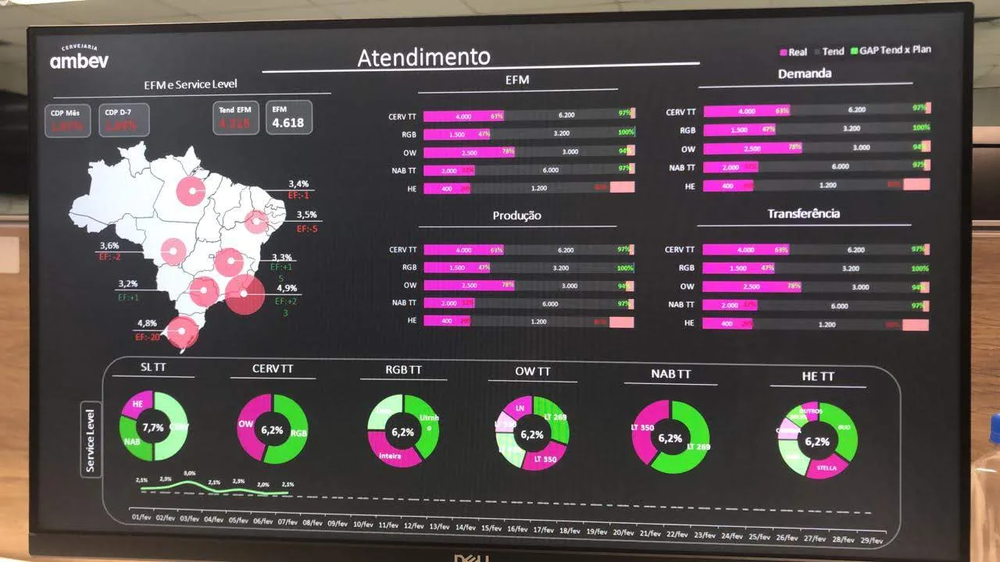
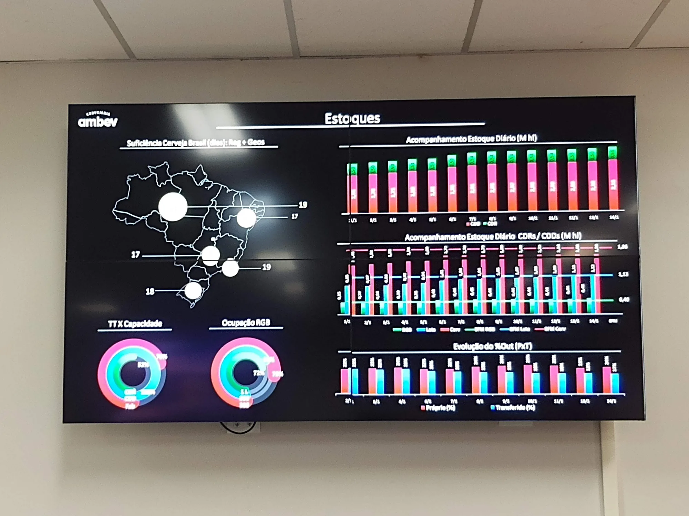
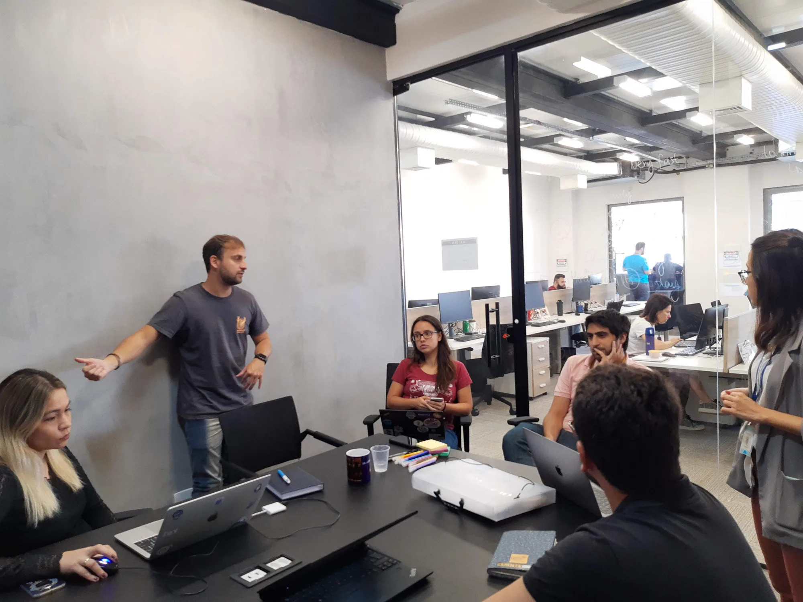
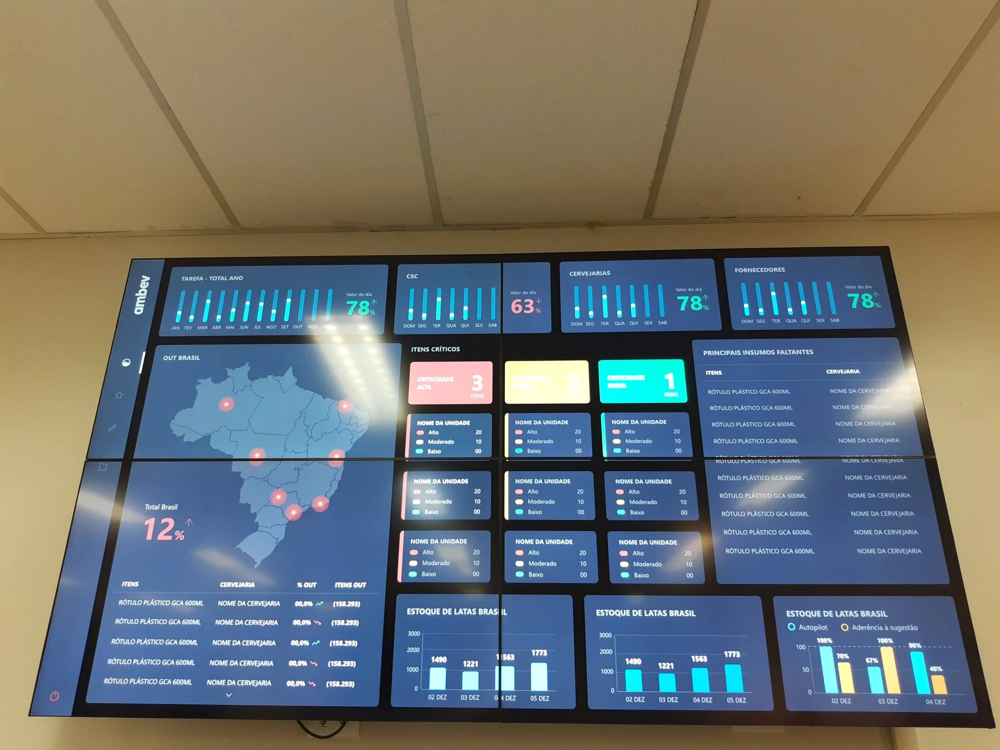

- UX Design
- Henrico Amaral · Andrea Parente
- UI Design
- Michelle Santos · Afonso Lopez
- Empresa
- Qintess
- Cliente
- Ambev
- Período
- 2019 — 2020
- Duração
- 12 meses
- Tipo
- Plataforma de monitoramento operacional logístico
- Plataforma
- Web · Centros de controle
- Escopo
- Discovery · Arquitetura da informação · UX/UI · Prototipação
O projeto organizou a leitura em três camadas: monitoramento nacional, indicadores críticos e análise contextual de eventos.
A distribuição nacional envolve múltiplos centros de decisão simultâneos.
Quatro perfis coexistiam na mesma operação: centros de distribuição, equipes logísticas, times regionais e gestores de operação.
Para analisar uma ruptura ou atraso relevante, era necessário cruzar informações entre relatórios, sistemas internos e planilhas regionais.
O desafio era conectar quatro perfis a uma mesma leitura do estado logístico.
A operação era acompanhada por relatórios e sistemas desconectados.
Cada equipe mantinha uma visão parcial: demanda, ruptura, disponibilidade, tracking e faturamento eram lidos em superfícies diferentes.
Essa fragmentação produzia leituras parciais e dificultava priorizar a exceção que exigia ação.
Antes · Fragmentação
Relatórios físicosPlanilhas regionaisControl TowerCommand CenterLeituras paralelasDepois · Visão única
O problema era priorizar a exceção certa.
A operação não precisava de mais uma tela; precisava de uma leitura comum.
Centros de distribuição e times comerciais comparavam leituras diferentes para localizar rupturas, atrasos e carregamentos críticos.
A interface precisava mostrar onde estava o problema, qual região foi afetada e o que deveria ser priorizado.
A leitura tinha que acompanhar o ritmo de decisão da operação.
A cocriação com equipes de logística mostrou que uma visão comum só seria útil se conectasse sinal, análise, ritual S&OE, decisão, responsável e acompanhamento.
Topologia operacional
Conectar Control Tower, Command Center, S&OE, BIs e Workstations na mesma leitura.
Ritual de decisão
Estruturar sinal, análise, reunião S&OE, decisão, responsável e acompanhamento.
Hierarquia de indicadores
Ordenar demanda, Forecast Error, FVA, Bias, ruptura, suficiência e nível de serviço.
Leitura executiva e tática
Separar síntese nacional, monitoramento regional e priorização operacional.
Leitura investigativa
Preservar densidade suficiente para investigar desvios sem perder contexto.
Leitura coletiva
Dimensionar hierarquia, distância de leitura e densidade para centros de controle.
Estado operacional como objeto central do sistema.
A decisão estrutural foi unificar demanda, ruptura e disponibilidade em torno do estado atual da operação.
A leitura comum não elimina toda a complexidade.
A plataforma não substituía todas as fontes ou todos os rituais operacionais; ela organizava a leitura necessária para decidir. A análise de causa, as decisões de negócio e os limites de atualização continuaram dependendo do contexto das equipes e dos sistemas de origem.
Múltiplos perfis
Perfis com responsabilidades diferentes precisavam usar a mesma arquitetura.
Uso em telas de parede
A interface precisava ser legível à distância.
Múltiplas fontes
Control Tower, Command Center, BIs e Workstations compunham a mesma leitura.
Cadência de decisão
A leitura precisava acompanhar análise, reunião S&OE e priorização.
Uma sequência de telas para diferentes níveis de leitura.
A sequência conecta visão nacional, detalhe regional, análise temporal e diagnóstico de rupturas.


Os materiais mostram a passagem de dashboards densos e telas de controle para uma leitura hierarquizada, validada com o time.




Impacto: a operação passou a ser lida como um sistema compartilhado.
Sem baseline público de antes e depois, o impacto mais forte está na evidência operacional: o sistema reduziu a reconstrução manual de contexto e organizou uma leitura comum para perfis que antes operavam com versões paralelas da realidade.
Centros de distribuição, logística, times regionais e gestão passaram a operar sobre uma mesma leitura do estado logístico.
Monitoramento nacional, indicadores críticos e análise contextual passaram a manter o mesmo contexto entre visão geral e investigação.
Sinal, análise, reunião S&OE, decisão, responsável e acompanhamento formaram uma sequência explícita de decisão.
A leitura de rupturas, disponibilidade e carregamentos deixou de depender do cruzamento manual de relatórios antes da ação.
Escala exige diferentes distâncias de leitura.
O aprendizado foi separar monitoramento, investigação e decisão sem romper o contexto entre as camadas. No projeto Ambev, o design transformou diferentes fontes e rituais em uma arquitetura comum para quem precisava acompanhar ou decidir.